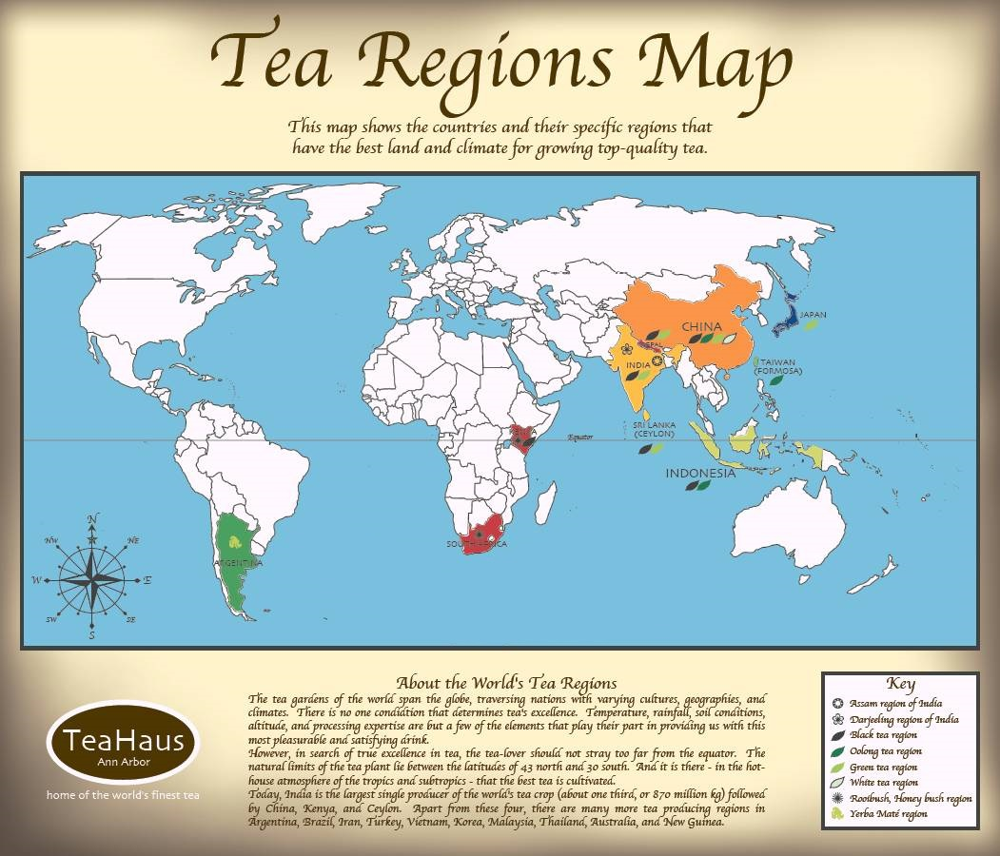

")
")
Trên thế giới, trà là thức uống thứ hai sau nước. Nói như thế để bạn có thế tưởng tượng tầm quan trọng của trà trong đời sống của chúng ta.
Trà có nguồn gốc ở Trung Quốc, nơi nó được biết đến từ thời cổ đại.
Một truyền thuyết Trung Quốc nói rằng thức uống này sinh ra trong năm 2737 trước Công nguyên, khi những chiếc lá rơi vào ấm nước của Thần Nông. Bộ đồ trà đầu tiên có niên đại từ thời nhà Hán (kỷ 206 Trước Công Nguyên) đã được tìm thấy.
Trà trở thành thức uống phổ biến mà từ thời nhà Đường (thế kỷ VI đến đầu thế kỷ thứ IX). Trong thế kỷ thứ IX, trà du nhập vào Nhật Bản và thế giới Ả Rập. Tại châu Âu, kiện trà đầu tiên được đăng ký giao hàng năm 1606, ở Amsterdam, Hà Lan. Vào cuối thế kỷ XVIII, Anh phát triển trồng thuốc phiện ở Ấn Độ để trao đổi với trà Trung Quốc. Trong thế kỷ XIX, Trung Quốc không còn đủ trà để cung cấp nhu cầu tiêu dùng phương Tây ngày càng tăng, Anh phát triển trồng trà tại Ấn Độ, Sri Lanka và châu Phi. Ngày nay, các nhà sản xuất trà lớn thế giới là Trung Quốc, Ấn Độ, Sri Lanka, Kenya và Thổ Nhĩ Kỳ.
Sau đây là bản đổ thổ nhưỡng của những vùng đất trên thế giới đã và đang cung cấp những sản phẩm trà hảo hạng cho chúng ta ngày nay.

Trà đen và trà xanh được trồng nhiều ở Trung Quốc, Ấn Độ và Sri Lanka và những nước Đông Nam Á.
Trung Quốc, Đài Loan va Indonesia hội tụ những điều kiện tụ nhiên thuận lợi đề phát triển trà Ô Long, loại trà mang lại giá trị kinh tế rất cao.
Ấn Độ được biết đến với một loại trà đen hảo hạng mang tên của vùng đất nằm ở phía Bắc Ấn Độ Darjeeling. Darjeeling rất được ưa chuộng ở Anh vì hương vị rất đặc biệt của nó : sự hòa quyện tinh tế của hương thơm hoa cỏ, vị đắng đặc trưng và quả Muscat.
Khi hậu khắc nghiệt của Kenya và Nam Phi là điều kiện thuận lợi để phát triển cây Rooibush (Rooibos) cho ra một loại trà thảo dược màu đỏ. Loại trà này chỉ phát triển tại hai nước này và hiện nay được xuất khẩu toàn thế giới vì hương vị rất dịu ngọt nhẹ của nó nhưng hơn hết là khả năng chữa được nhiều loại bệnh như hen suyễn, dị ứng, mất ngủ, khó tiêu và kích thích ngoài da.
Nam Mỹ được biết đến với trà Yerba Mate. Người sàng điệu có câu nói rằng « Yerba Mate có sức mạnh của cà phê, các lợi ích sức khỏe của trà và hưng phấn của sô cô la » - tất cả trong một đồ uống. Trà Yerba Mate giúp kích thích thần kinh và cơ bắp , kích thích tiêu hóa và lợi tiểu.
Việt Nam chúng ta được biết nhiều trên thế giới với trà hương sen và hương lài truyền thống.
© NGUYENteacoffee.com